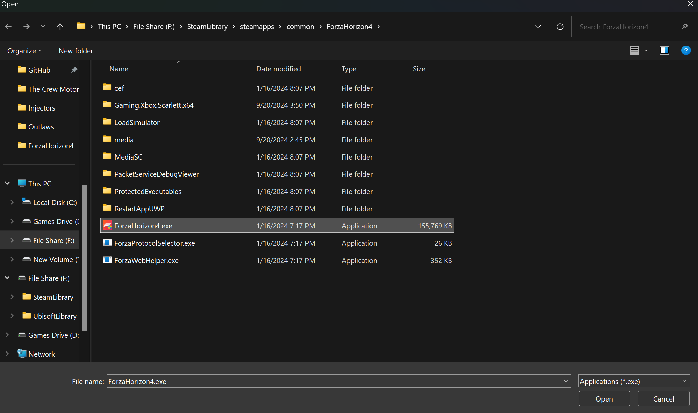
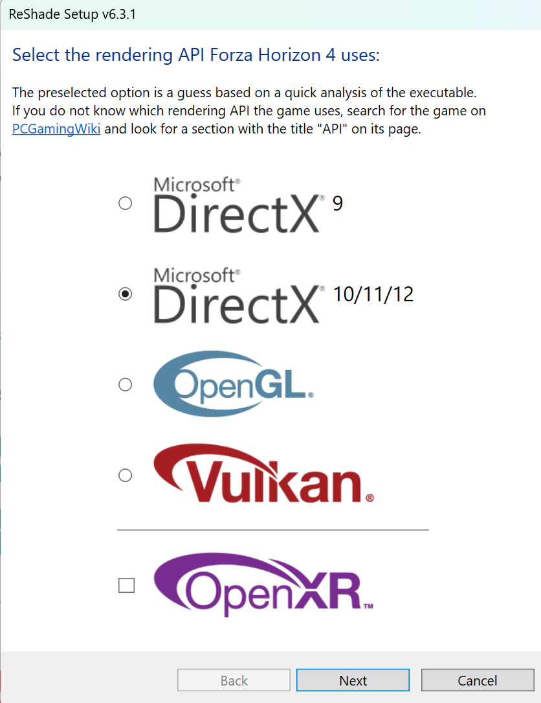

Simulated Reality Displays
Simulated Reality (SR) Displays, formerly known as Dimenco, are now backed by Leia Inc. This guide will help you get SuperDepth3D working on hardware with SR technology.
Main Website: https://www.leiainc.com/
Hardware Developers Links:
- Acer Spatiallabs
- ASUS Spatial Vision
- Sony Spatial Reality
Please note that this guide is intended for hardware with the SR badge:

Getting Started with SuperDepth3D
To use SuperDepth3D with SR Displays, you can follow either the easy text guide or the manual guide.
Video Guide
For a video tutorial, please refer to this video guide.
SuperDepth3D for Simulated Reality Displays.
Easy Text Guide
To install ReShade and SuperDepth3D, follow these steps:
-
Download ReShade: Download the add-on version of ReShade.
-
Install ReShade: Install ReShade by running the ReShade.exe.

-
Select Game Executable: Select or browse for the game's executable. In this example, we will install it in Forza Horizon 4.

-
Click
Open. -
Select API: Select the API and click next.

-
Select SuperDepth3D: Select the Depth3D Repo and check
SuperDepth3D.fx.
-
Click
Next. -
Select 3DGameBridgeProjects Add-on: Make sure to select the
3DGameBridgeProjectsadd-on.
Click Next and then Finish.
Manual Guide
If you prefer a more manual approach, follow these steps:
-
Install ReShade: Install ReShade or inject it into your game, ensuring you use the add-on version of ReShade.
If ReShade is already installed, you can skip this step.
-
Download 3DGameBridge: Download the latest version of 3DGameBridge.

-
Copy Add-ons: Copy both add-ons or just the one you need, based on the game's architecture.

-
Paste Add-ons: Paste the add-ons where the game's executable is located or where the ReShade
.dllis installed.Please start the game to see if it works.
Important Notes
When starting the game, you may need to set your primary monitor to the Simulated Reality Display. If not, the game may not select the correct screen, resulting in a black screen.

Additionally, ensure the game is running at its native resolution for the 3D display. If the resolution is too small, the image may appear distorted.